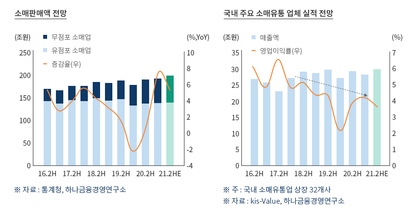
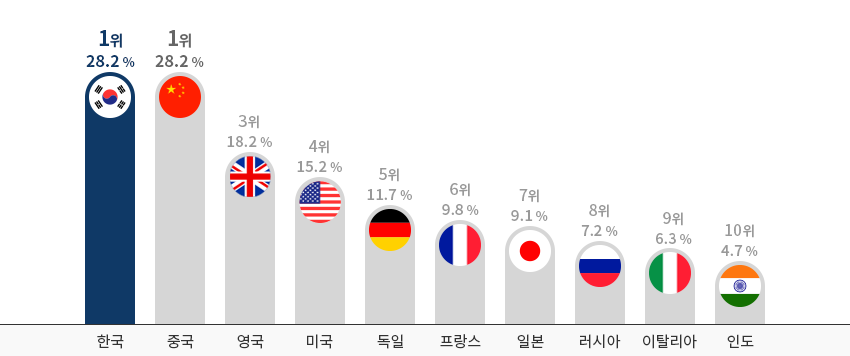
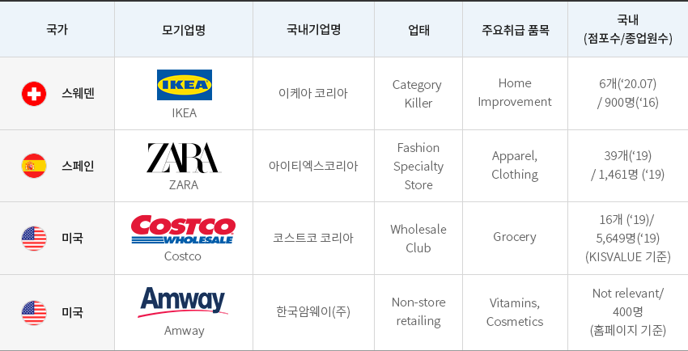
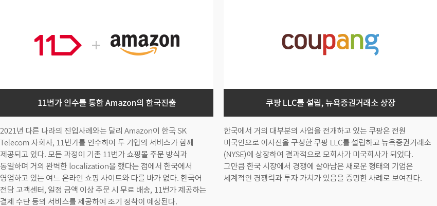
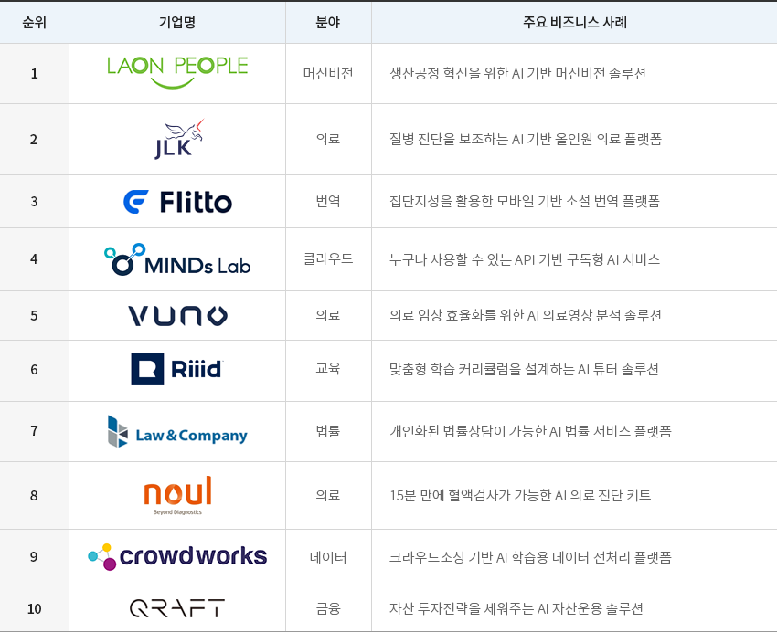
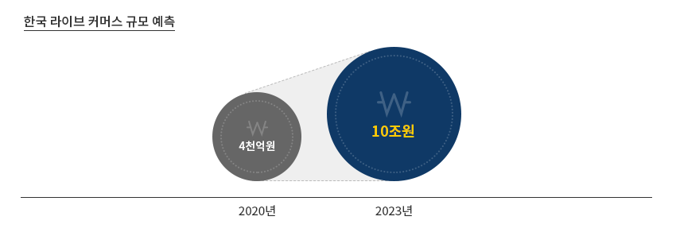
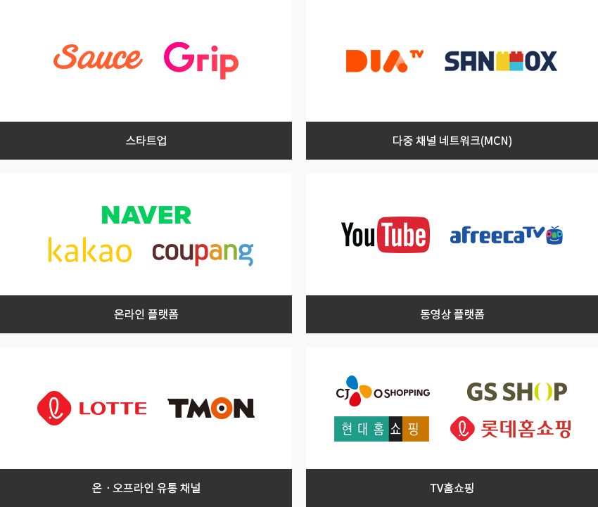

유통
- Home
- Why KOREA
- 산업
- 유통
유통
Distributions
-
코로나 19 사태로 증명된 국내 공급망의 건실함 내용닫기코로나 19 사태로 증명된 국내 공급망의 건실함대부분의 나라에서 코로나 19 사태로 발생한 사재기 현상이 대한민국에서는 전혀 발생하지 않은 이유는
국내 공급망의 건실함에 있다. 소싱, 제조, 유통, 판매에 이르는 국내 공급망이 위기의 순간에도 흔들리지 않고
제 기능을 수행한 결과이다. 대부분의 생필품이 국내에서 생산되고, 온라인과 오프라인에 촘촘히 깔려 있는 수많은 점포,
세계 최강의 택배 및 배달 시스템, 수차례를 위기를 경험한 소비자, 해외 각지에 펼쳐 있는 소싱 네트워크 등 모든 요소가
역량 있는 국내 공급망의 특징이다.그 결과 2020년 비교적 안정된 소매 판매 수준이 유지되었고, 일정한 수준으로 생산을 견인하고 있다.
전체 소매판매액지수를 보면 2015년 100을 기준으로 2021년 2월에 115.2를 기록하여 코로나 19 이전인
2019년 12월 116.2에 근접하고 있다."코로나 19 시대에 비교적 안정적인 소매판매"소매판매액 전망(무점포 소매업, 유점포 소매업, 증감율(우)) ※ 자료 : 통계청, 하나금융경영연구소국내 주요 소매유통 업체 실적 전망 (매출액, 영업이익률(우)) ※ 주 : 국내 소매유통업 상장 32개사
※ 자료 : kis-Value, 하나금융경영연구소 ※ 출처: 하나증권
※ 출처: 하나증권 -
Digital Technology로 위기를 극복한 비대면 소매업 내용열기Digital Technology로 위기를 극복한 비대면 소매업코로나 19 사태로 인해 비대면 소매의 필요성이 증가하고 있는 가운데 이전에도 국내 소매시장에서 최대 점유율을 차지하는
업태는 온라인 쇼핑이었다. 온라인 쇼핑은 TV 홈쇼핑, PC 기반 온라인 쇼핑, 그리고 모바일 기반 온라인 쇼핑이 포함된다.
PC와 모바일을 통한 전자상거래 비중은 2019년에 이미 세계 1위를 차지했다."소매유통시장 대비 전자상거래 비중(2019)"
※ 자료 : Euromornitor International (2019)특이하게도 TV 홈쇼핑의 시장규모가 여느 국가보다 상당히 큰 편인데, 이 또한 비대면 소매업에 해당된다.
TV 홈쇼핑, PC 기반 온라인 쇼핑, 모바일 기반 홈쇼핑 모두 성장하여 오프라인 소매의 부진을 만회하였다.
특히 모바일 온라인 쇼핑의 성장이 눈에 띄는데, 2020년 1월과 비교하여 21년 1월에 29.2% 성장한 10조 6천억으로
매출을 올렸고, 온라인 쇼핑에서 차지하는 모바일 비중도 통계청 기준 70%를 넘어섰다."2020년 한국 소매업 현황"2020년 한국 소매업 현황 표로 년도별, 전년대비 증감율 정보제공 2019 2020 전년대비 증감율 온라인 쇼핑 소계 149.4 176.2 17.94% TV 홈쇼핑 14.1 15.1 7.09% PC 기반 쇼핑 48.0 52.5 9.37% 모바일 기반 쇼핑 87.3 108.6 24.40% 대형마트 32.4 33.8 4.32% 백화점 30.4 27.4 -9.87% 슈퍼마켓 44.2 46.5 5.20% 편의점 25.7 26.5 3.11% 전문소매점 135.4 122.0 -9.90% 방문·다단계 15.4 14.8 -3.90% Grocery 총계 417.5 447.2 7.11% ※ 출처 : KIET 산업경제 -
한국 유통 시장, 온라인 쇼핑과 편의점을 기반으로 지속 성장 내용열기한국 유통 시장, 온라인 쇼핑과 편의점을 기반으로 지속 성장국내 비대면 소매 시장에서 특히 주목할 점은 콜드체인의 완성과 신속한 택배서비스 덕분에,
음·식료품과 음식서비스분야에서의 거래가 급속히 늘었다는 점이다. 음식서비스는 전년 동월 대비 90.3% 그리고
음·식료품은 53% 이상 늘어, 전체 온라인 쇼핑 중 두 품목이 전체의 27.8%를 차지하게 되었다. 매우 다양한 결제시스템,
음식서비스 시장에서의 다양한 플랫폼, 세련된 온라인 프로모션, 세계 최고 속도의 인터넷 및 무료 서비스,
세계 최고 수준의 휴대전화 보급률 등이 이 같은 성과에 기여했다."한국 온라인 쇼핑시장과 모바일 쇼핑" 온라인쇼핑 거래액 - 총 15조 623억원(구성비)
온라인쇼핑 거래액 - 총 15조 623억원(구성비)- 음·식료품 - 2조 1,704억원(14.4%)
- 음식서비스 - 2조 242억원(13.4%)
- 가전·전자·통신기기 - 1조 8,740억원(12.4%)
- 생활용품 - 1조 3,035억원(8.7%)
- 화장품 - 1조 808억원(7.2%)
전년동월대비 증감 - 2조 7,534억원 증가 (증감률, 22.4%)- 음식서비스 - 9,605억원 증가 (90.3%)
- 음·식료품 - 7,531억원 증가 (53.1%)
- 가전·전자·통신기기 - 7,400억원 증가 (65.3%)
- 모바일쇼핑 거래액 - 2020년 1월 : 8조 2,165억원 > 2021년 01월 : 10조 6,912억원 (29.2% 증가)
- 온라인쇼핑 중 모바일 비중 - 2020년 1월 : 66.8% > 2021년 01월 : 70.5% (3.7%p 증가)
※ 출처 : 통계청(2021.1월)"2021년 1월 온라인쇼핑동향" -
글로벌 기업 한국 진출 후 매출 상위권 기록 내용열기글로벌 기업 한국 진출 후 매출 상위권 기록한국 소매기업의 특징은 다채널을 보유하고 있어 TV 홈쇼핑은 물론, 모바일, PC, 백화점 대형마트 슈퍼마켓,
편의점을 동시에 운영하고 있다. 현재 해당 기업들은 옴니 채널 구축에 노력을 기울이고 있어 특정 업태에만 강점을 갖는
기업은 국내에서 좀처럼 찾기 어렵다.국내로 진출한 IKEA, ZARA, Costco 그리고 2021년에 진출한 Amazon 등과 같은 해외 업체가 이 같은 빈틈을 메우고 있다.
이케아는 한국에 성공적으로 진출하여 견조한 매출 실적을 기반으로 점포를 늘려가고 있으며, 코스트코는 한국 지점(서울 양재)에서
전 세계 코스트코 매장 중 가장 높은 매출을 기록하는 등 많은 글로벌 유통 기업이 한국에서 성공적으로 경영 활동을 이어 나가고 있다."한국 진출 주요 글로벌 유통 기업"한국 진출 주요 글로벌 유통 기업 표로 국가, 모기업명, 국내기업명, 업태, 주요취급 품목, 국내(점포수/종업원수) 정보제공 국가 모기업명 국내기업명 업태 주요취급 품목 국내(점포수/종업원수) 스웨덴 IKEA 이케아 코리아 Category Killer Home Improvement 6개(‘20.07) / 900명(‘16) 스페인 ZARA 아이티엑스코리아 Fashion Specialty Store Apparel, Clothing 39개(‘19) / 1,461명 (‘19) 미국 Costco 코스트코 코리아 Wholesale Club Grocery 16개 (‘19) / 5,649명(‘19) (KISVALUE 기준) 미국 Amway 한국암웨이(주) Non-store retailing Vitamins, Cosmetics Not relevant/400명 (홈페이지 기준)
※ 자료협조 : 숭실대학교 IT유통물류학과- 11번가 인수를 통한 Amazon의 한국진출 - 2021년 다른 나라의 진입사례와는 달리 Amazon이 한국 SK Telecom 자회사, 11번가를 인수하여 두 기업의 서비스가 함께 제공되고 있다. 모든 과정이 기존 11번가 쇼핑몰 주문 방식과 동일하며 거의 완벽한 localization을 했다는 점에서 한국에서 영업하고 있는 여느 온라인 쇼핑 사이트와 다를 바가 없다. 한국어 전담 고객센터, 일정 금액 이상 주문 시 무료 배송, 11번가 제공하는 결제 수단 등의 서비스를 제공하여 조기 정착이 예상된다.
- 쿠팡 LLC를 설립, 뉴욕증권거래소 상장 - 한국에서 거의 대부분의 사업을 전개하고 있는 쿠팡은 전원 미국인으로 이사진을 구성한 쿠팡 LLC를 설립하고 뉴욕증권거래소 (NYSE)에 상장하여 결과적으로 모회사가 미국회사가 되었다. 그만큼 한국 시장에서 경쟁에 살아남은 새로운 형태의 기업은 세계적인 경쟁력과 투자 가치가 있음을 증명한 사례로 보여진다. 서비스를 제공하여 조기 정착이 예상된다.
-
유통, 물류분야에서 Digital Transformation 에 대한 지원 서비스 내용열기유통, 물류분야에서 Digital Transformation 에 대한 지원 서비스유통산업은 Digital Transformation이 매우 빠르게 진행되는 산업이다. 한국의 대규모 소매기업들도 옴니 채널을
구축하면서 AI, Big Data, Smart Warehouse 등에 막대한 투자를 하고 있다. 그런데도 이들을 제대로 지원할 수 있는
높은 역량을 가진 국내 기업은 드문 편이며 유통과 물류 분야에서는 더욱 그렇다. Digital Transformation을 지원하는 데에
많은 경험을 축적해 온 해외 전문 기업들에게는 한국 시장은 성장 잠재력이 크지만, 아직 개발되지 않은 시장이 될 것이다."AI분야 한국의 Top 10 Start-up"AI분야 한국의 Top 10 Start-up 표로 순위, 기업명, 분야, 주요 비즈니스 사례 정보제공 순위 기업명 분야 주요 비즈니스 사례 1 LAON PEOPLE 머신비전 생산공정 혁신을 위한 AI 기반 머신비전 솔루션 2 JLK 의료 질병 진단을 보조하는 AI 기반 올인원 의료 플랫폼 3 Flitto 번역 집단지성을 활용한 모바일 기반 소설 번역 플랫폼 4 MINDs Lab 클라우드 누구나 사용할 수 있는 API 기반 구독형 AI 서비스 5 VUNO 의료 의료 임상 효율화를 위한 AI 의료영상 분석 솔루션 6 Riiid 교육 맞춤형 학습 커리큘럼을 설계하는 AI 튜터솔루션 7 Law&Company 법률 개인화된 법률상담이 가능한 AI 법률 서비스 플랫폼 8 noul 의료 15분 만에 혈액검사가 가능한 AI 의료 진단 키트 9 crowd works 데이터 크라우드소싱기반 AI 학습용 데이터 전처리플랫폼 10 QRAFT 금융 자산 투자전략을 세워주는 AI 자산운용 솔루션
-
새로운 기술에 개방적인 한국 소비자 내용열기새로운 기술에 개방적인 한국 소비자새로운 기술과 영업 방식에 대해 한국 소비자는 매우 개방적이다. 교육수준이 높고 호기심이 강한 한국 소비자는
혁신의 속도가 매우 빠른 디지털 시대에 쉽게 적응한다. 모바일 쇼핑의 대명사가 된 쿠팡의 성공은 이러한 한국 소비자가
고객기반이 되었기에 가능했다. Video commerce, Metaverse 등 새로운 Format의 채널이 속속 등장하고 있는데,
한국 시장에서 이들 format들은 이미 잘 알려져 있거나 상당한 투자가 진행되고 있으며, 한국 시장은 새로운 비즈니스 모델이
얼마나 확산될 수 있을지 가늠할 수 있는 최적의 테스트 베드라고 할 수 있다."한국 라이브 커머스 시장" 2023년 10조원">
"라이브 커머스 관련 기업"- 스타트업 - Sauce, Grip
- 다중 채널 네트워크(MCN) - DIA TV, SANDBOX
- 온라인 플랫폼 - Naver, Kakao, coupang
- 동영상 플랫폼 - Youtube, afreecaTV
- 온·오프라인 유통 채널 - LOTTE, TMON
- TV홈쇼핑 - CJ O shopping, GS SHOP, 현대홈쇼핑, 롯데홈쇼핑
※ 출처: 교보증권


Invest KOREA담당자
유통/물류 PM
강남훈
서비스산업유치팀
T.+82-2-3460-3285